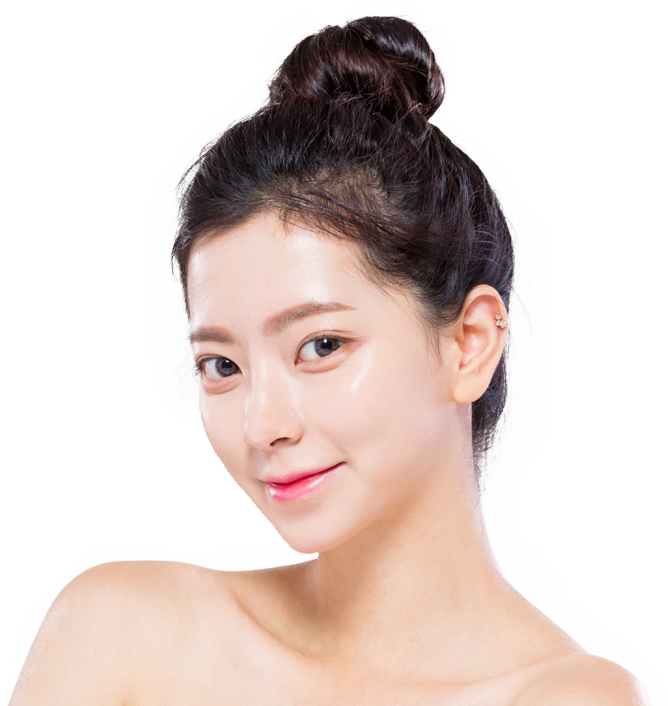
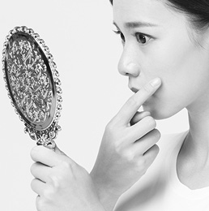
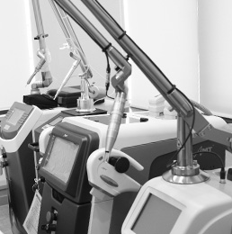

온라인진료상담
온라인진료상담 이벤트 및 공지사항
이벤트 및 공지사항

색소치료를 할 때에 색소를 강하게 파괴하는 것보다
더 중요한 점은 무엇일까요?
기미, 잡티, 주근깨, 검버섯, 흑자, 점, 색소침착, 오타양반점, 밀크커피반점,
선천성 모반 등 너무나 다양한 색소들... 이상적인 색소치료를 위한 방법에 대해 알려드립니다.

저자극 색소치료
SOONSOOAN
HEALTHY SKIN & NATURAL BEAUTY
짙어지기 전, 깨끗한
피부를 위한 색소질환치료
수년에 걸쳐 완성된 의료진의 경험을 바탕으로 세심한 맞춤 진단부터,
다양한 최신 장비를 갖추어 깨끗하고 탄력있는 피부를 되찾아드립니다.
색소치료를 할 때에 색소를 강하게 파괴하는 것보다
더 중요한 점은 무엇일까요?
기미, 잡티, 주근깨, 검버섯, 흑자, 점, 색소침착, 오타양반점, 밀크커피반점,
선천성 모반 등 너무나 다양한 색소들... 이상적인 색소치료를 위한 방법에 대해 알려드립니다.
다양한 색소질환을 해결하는 방법, 색소를 강하게
파괴하는 것 보다 더 중요한 것은 무엇일까요?
우리의 몸은 유기체이고 세포들은 서로 신호를 주고 받으며, 색소 부위에 너무 강한 자극을
주면 인접한 주변 세포들도 자극을 받습니다. 자극이 반복되면 피부 세포들이 손상될 수 있고,
그렇게 되면 부작용이 발생하거나, 남아 있는 색소들을 뿌리까지 제거하기 어려워집니다.
그렇기 때문에 다음의 두 마리 토끼를 모두 잡는 것이 이상적인 색소치료의
원칙이라고 할 수 있습니다.

적절한 방법으로
색소를 파괴
주변세포들에게
전달되는 자극과
손상을 최소화
올바른 치료를 위해선 모두가
일괄적으로 이루어져야 합니다.
HOW?
피부손상을 최소화하면서 색소를 뿌리까치 치료하기 위해 순수안은 다섯가지 원칙을 지킵니다.

복합적인 색소 병변
각각의 정확한 감별 진단

색소의 종류와 위치에
따른 적절한 레이저의 선택
선택된 레이저를 가장 적합한
강도와 펄스로 조사
색소가 깊어지지 않도록
색소 장벽 강화
레이저 후 손상 받은 세포와
주변 조직의 회복을 위한 관리
순수안피부과의원에서는 이와 같은 색소 치료 원리를 바탕으로
고객님 각자의 피부상태에 맞춰 일상생활 지장이 거의 없는 색소 치료 프로그램을 제공합니다.
간단하게 알아보는
여러가지 색소 질환
기
미
기미는 주로 여성에게 20대 이후에 뺨, 눈가, 턱, 이마 등에 대칭적으로 발생하는 옅은 갈색의 넓은
색소반입니다. 여러가지 외부요인에 의해 색이 진해지거나 얼룩덜룩해질 수 있고, 이럴 경우 치료
방법이 달라집니다.
‘기미 치료 받으러 왔어요.’하며 피부과의원에 내원하시는 분들 중 기미가 아닌 경우가 매우 많으므로
정확한 진단이 중요합니다.
주
근
깨
주근깨는 유전성이 강하고, 소아청소년기에 주로 나타나며, 다수의 작은 갈색 반점들이 콧등,
눈 아래, 뺨에 대칭적으로 발생합니다. 주근깨가 정말 맞다면 치료는 어렵지 않은 편이지만,
주근깨는 그다지 흔하지 않으며, 특히 20대 중반 이후에 주근깨와 비슷한 모양으로 발생하는
색소 반점들은 주근깨가 아닌 경우가 많습니다.
흑
자
흑자는 얼굴 전체와 얼굴 이외의 부위에도 발생할 수 있는 갈색을 띠는 색소반점입니다.
흑자는 단발성 혹은 다발성, 옅은 갈색 혹은 짙은 갈색, 군집성 혹은 산재성, 노인성 혹은 비노인성 등
엄청나게 다양한 여러가지 형태로 나타날 수 있으므로 진단과 치료에 세심한 주의와 많은 경험을
필요로 합니다.
검
버
섯
검버섯은 사마귀처럼 표면이 뾰족뾰족한 표피증식을 말합니다. 불룩하게 튀어나오고 갈색 혹은
검은색 색소가 동반되면 쉽게 알아볼 수 있으나, 납작하고 얕게 튀어나오고 색이 진하지 않으면
다른 질환과 감별이 어려울 수 있습니다.
후
천
성
양
측
성
오
타
모
반
후천성 양측성 오타모반 반점은 20대 이후에 광대뼈 부위, 관자놀이, 콧등, 콧망울 등에 대칭적으로
나타나는 푸른색 혹은 회색 색소반점입니다. 다른 색소들과 뒤엉켜 있는 경우가 많으므로 감별진단이
매우 중요하고, 꾸준히 치료 받기만 한다면 좋은 효과를 볼 수 있고 재발도 적은 편입니다.
흔히, 잡티라고 하는 것은 위와 같은 여러가지 색소질환들을 종합하여 지칭하는 비의학적 용어입니다.
이 밖에 다 언급하기도 어려울 정도로 수많은 색소 질환들이 있습니다. 하지만 색소 질환들은 양상이 서로 비슷한 경우도 많고, 대부분 여러가지 색소 질환이 복합적으로 발생합니다. 그렇기 때문에 인터넷에 아무리 좋은 정보가 있다고 한들, 그게 내가 가진 색소와 맞지 않는 정보라면 아무 소용이 없습니다.
혼자서 너무 고민하지 마시고, 순수안피부과의원이나 가까운 피부과전문의 선생님을 찾아주세요.
- 순수안피부과의원, 김민호 원장 -